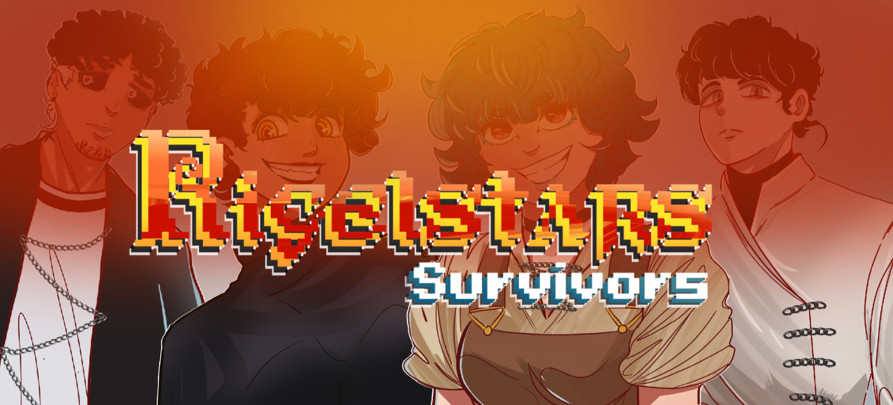
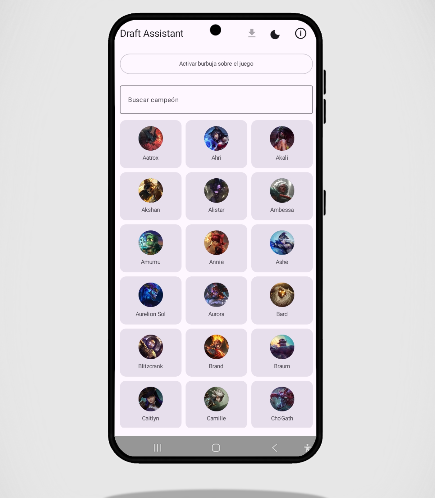
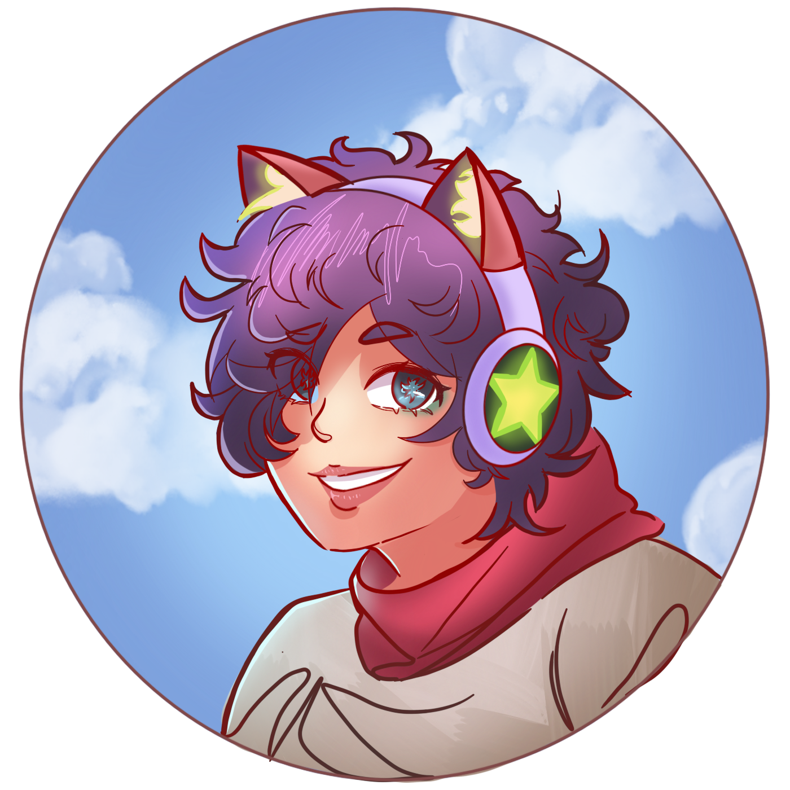

VIDEOJUEGOEn desarrollo
Rigelstars Survivors
Un juego en desarrollo. Sigue la página oficial para ver avances, novedades y el proceso de creación.
Ver avances en FacebookArtista · escritor · guitarrista
Ilustraciones, historias y proyectos digitales. Este es mi rincón para compartir lo que hago y lo que estoy construyendo.
Cargando dibujos…
Parte de mi proyecto
de inmortalidad como creador.

Un juego en desarrollo. Sigue la página oficial para ver avances, novedades y el proceso de creación.
Ver avances en Facebook
WR DRAFT ASSISTANT
Consulta builds, counterpicks y sinergias de campeones de Wild Rift antes o durante la fase de selección. La burbuja superpuesta permite tener la guía a mano mientras juegas.
La burbuja necesita permiso de superposición para mostrarse durante el juego.